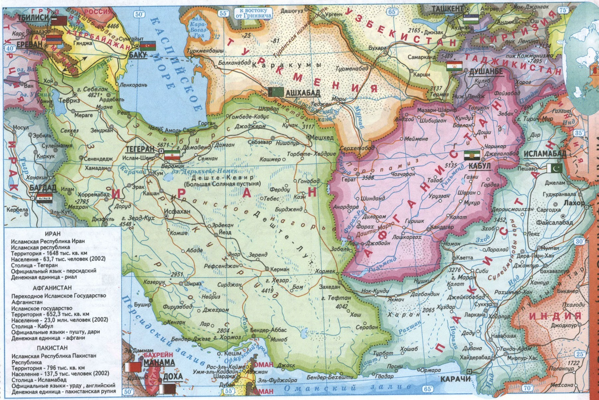
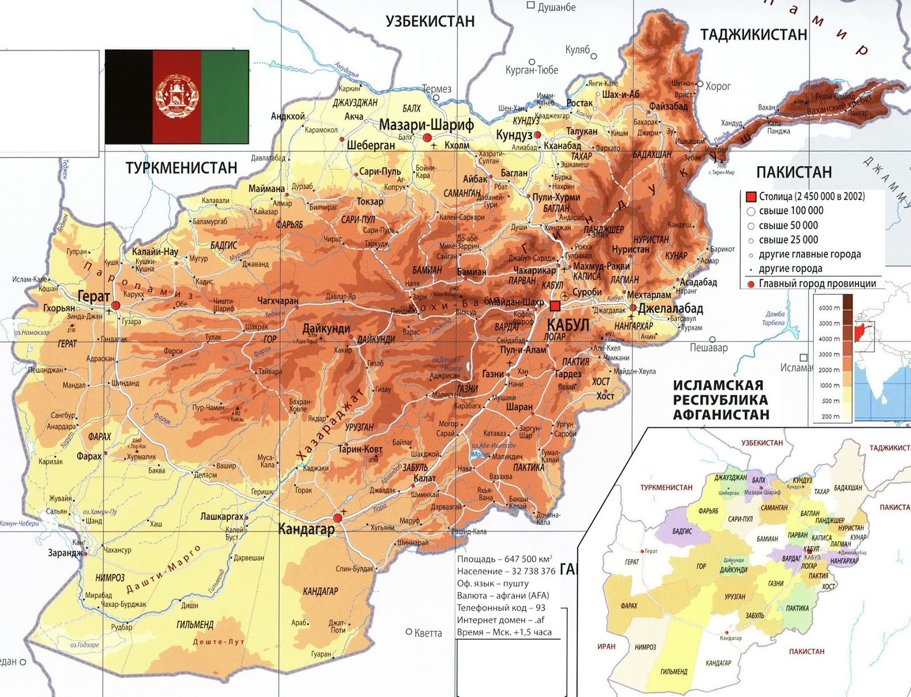
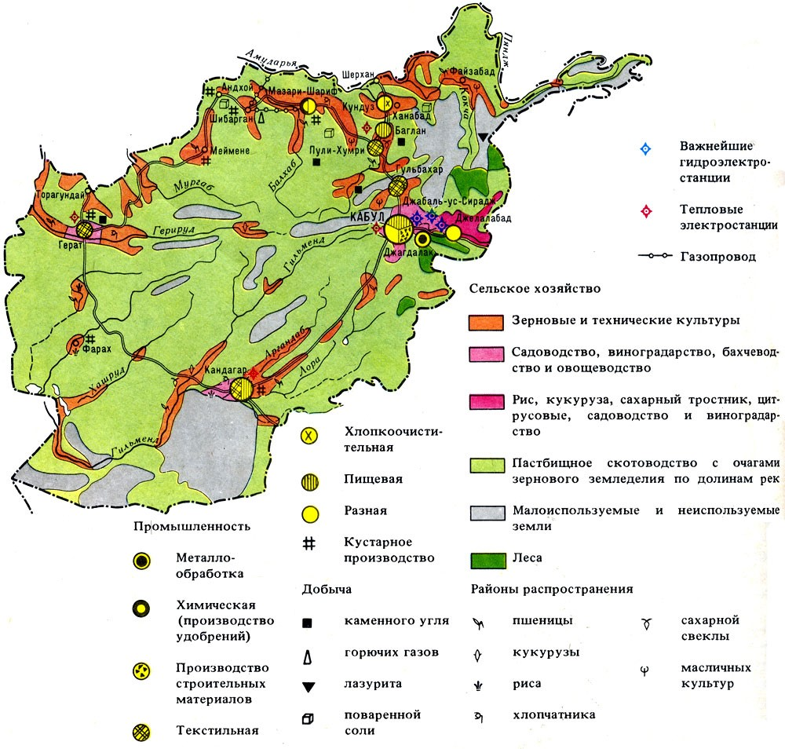
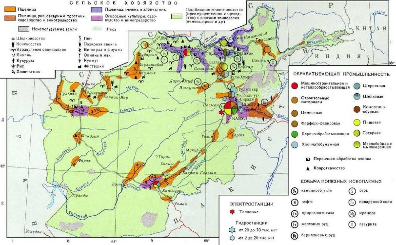

Афганистан.
Географическая справка
 Исламское государство, страна в Юго-Западной Азии. Граничит с Туркменией, Узбекистаном, Таджикистаном, Китаем,Пакистаном, Ираком. Площадь 652,9 тыс. км". Население 17,8 млн. человек (1994). Столица Кабул. Делится на 29 провинций и 2 округа. Национальные языки- пушту(афганский) и дары (или фарси-кабули). Государственная религия- ислам ( мусульмане - сунниты и шииты). Национальный праздник- День провозглашения независимости (19 августа). Афганистан- исламская республика. Основной закон государства не разработан. Афганистан- преимущественно горная страна. Высокогорные хребты чередуются с плато и межгорными котловинами.
 Через всю территорию проходят хребты системы Гиндукуш, которые веерообразно расходятся и переходят в более низкие хребты горной системы Парапамиз.
Вершины на востоке укрыты ледниками. Равнины и плоскогорья расположены на юго-западных и южных окраинах, Крупнейшие из них- пустыни Регистан и Дашты-Марго. Полезные ископаемые-природный газ, железная руда, каменный уголь, каменная соль, сера и др. Климат сухой, субтропический, с резкими суточными колебаниями температуры. В горах суровые зимы (до -20°C), снег держится 7-8 месяцев. На равнинах средняя температура июля 25-30 °С.
 Крупнейшие реки: Амударья, Мургаб, Герируд, Гильменд, Кабул. На равнинах многие реки пересыхают. Преобладает пустынная и полупустынная растительность. На востоке страны, где больше осадков, имеются дубовые, ореховые, ясеневые, хвойные леса. В пустынях есть оазисы. Животный мир: гиены, дикие ослы, горные козлы и др.
B Афганистане живет более 20 народов. Наиболее плотно заселены предгорная полоса на севере, оазисы и речные долины. Высокогорные и пустынные районы почти безлюдны. Около 2 млн. человек- кочевники и полукочевники. Примерно 5 млн. человек в связи с военными событиями живут в Пакистане и Иране как беженцы. Городское население составляет 20 процентов. Крупнейшие города: Кабул, Кандагар, Герат.
 B Афганистане живет более 20 народов. Наиболее плотно заселены предгорная полоса на севере, оазисы и речные долины. Высокогорные и пустынные районы почти безлюдны. Около 2 млн. человек- кочевники и полукочевники. Примерно 5 млн. человек в связи с военными событиями живут в Пакистане и Иране как беженцы. Городское население составляет 20 процентов. Крупнейшие города: Кабул, Кандагар, Герат.
Афганистан- один из крупнейших производителей опиума и гашиша и центр контрабандной торговли ими. Средняя продолжительность жизни у мужчин 43, у женщин 41 год. Издается несколько газет, функционируют национальное информационное агентство, телерадиокомпания. Страна очень пострадала от почти непрерывных войн: разрушены города, уничтожены сотни кишлаков. Из-за недостатка сырья, кадров, перебоев с электроэнергией нарушена деятельность почти всех предприятий.
Экспорт: каракуль, сухофрукты, шерсть, газ, ковры, орехи, виноград и др. Импорт: машины, оборудование, нефтепродукты, строительные материалы, продовольственные товары. Главные внешнеторговые партнеры: страны СНГ, Китай, Япония, Индия, Пакистан, Великобритания. Беларусь поставляет в Афганистан в небольшом количестве тракторы, радиоприемники, мотоциклы. Денежная единица- афгани.